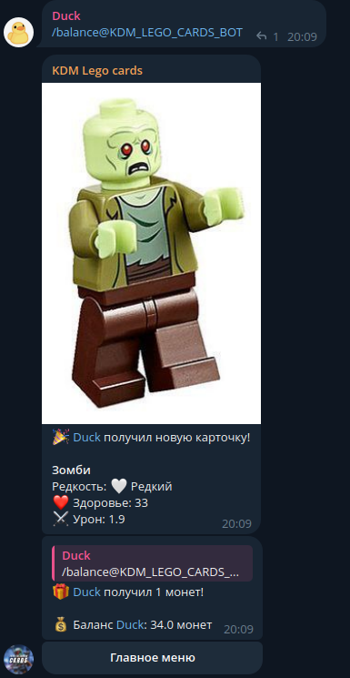
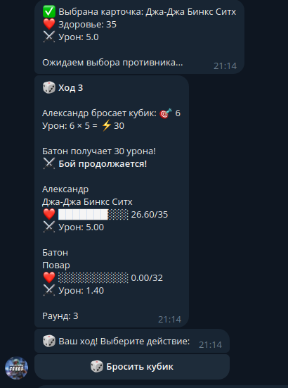

Бот для коллекционирования карточек. GitHub проекта
К сожалению из-за замедления Telegram приостановил свою работу.
Раз в 3 часа пишите /balance, чтобы получить монеты и случайную карточку!

Выбирайте карточку и сражайтесь с другими игроками. Побеждая, вы получаете карточку противника

Бот разработан на Python с использованием библиотеки python-telegram-bot. Хранение данных — SQLite. Деплой на облачном сервере с круглосуточной работой.